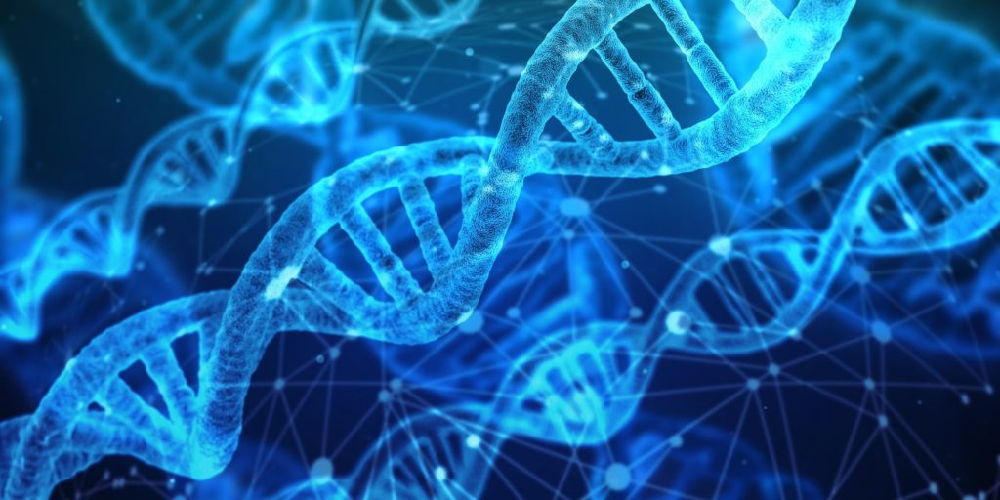
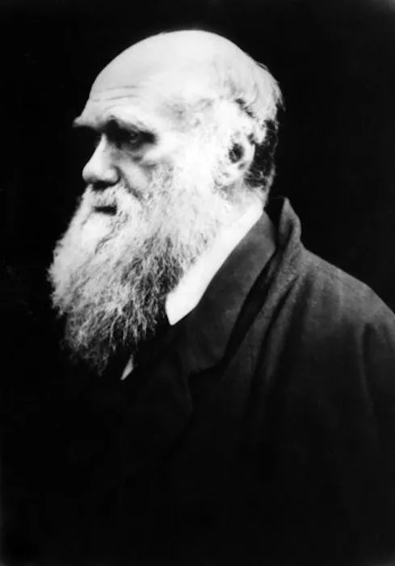
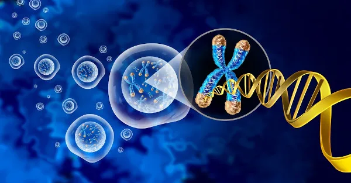

A Genética é a ciência da hereditariedade. Ela estuda o que são os genes, como eles transmitem as informações e como elas são passadas adiante, para a próxima geração, por meio da reprodução. A informação genética de um organismo é denominada genoma, e ele é organizado em cromossomos. Gregor Mendel é considerado o pai da Genética.
A Genética é área da Biologia que estuda a herança biológica ou hereditariedade. O DNA é a molécula que transmite as informações hereditárias dos genitores para os descendentes por meio da fecundação. Os gametas (óvulo e espermatozoide) contêm toda a informação hereditária para originar um novo organismo, e tais informações estão distribuídas em unidades fundamentais denominadas genes.
Os genes manifestam suas características sintetizando proteínas, que são substâncias essenciais à estrutura das células. A síntese de uma proteína representa, então, a “tradução” da informação do gene.
A Genética pode ser dividida em dois ramos: molecular e populacional. A Genética Molecular, conforme o nome indica, é a área da Biologia que estuda a função dos genes a nível molecular e pode fornecer, por exemplo, novos meios de tratar doenças, pois as técnicas são capazes de produzir diagnósticos muito sensíveis. A Genética de Populações ou Genética Populacional estuda a distribuição e composição dos genes de uma ou mais populações e os fatores que influenciam a diversidade genética dessas populações.
A história da Genética é muito antiga. Muitos filósofos, estudiosos e pesquisadores propuseram modelos de como as características são passadas de pais para filhos. Vamos conhecer algumas dessas teorias.
Os gregos antigos se interessavam no estudo da reprodução humana e da hereditariedade, e várias teorias e conceitos foram levantados naquela época, como a teoria da pangênese, defendida por Hipócrates, que propôs que pequenas partículas de várias partes do corpo continham as informações hereditárias. Essa teoria perdurou por um bom tempo e foi aceita até o século XIX.
Aristóteles rejeitou a teoria da pangênese, indicando que o ser humano é uma mistura dos traços dos pais, porém com o pai fornecendo a força vital e a mãe fornecendo a matéria prima.
Outra teoria era a do pré-formismo, que indicava que em um dos gametas, masculino ou feminino, já havia um ser pré-formado, o homúnculo ou pequeno homem, que simplesmente aumentaria de tamanho durante seu desenvolvimento.
O desenvolvimento do estudo das células teve uma forte influência sobre a Genética. De acordo com a teoria celular, toda vida é composta por células, e estas surgem apenas de células preexistentes.
Charles Darwin, o famoso biólogo que lançou a teoria da evolução, reconheceu que a hereditariedade era fundamental para a evolução. O biólogo August Weismann propôs a teoria do germoplasma, que defendia a separação de células somáticas e germinativas, e as informações genéticas seriam passadas apenas pelas germinativas.
Nascido em 1809, em Shrewsbury, Darwin, desde muito novo, interessou-se pelas ciências naturais. Um fato marcante em sua vida foi a expedição realizada a bordo do HMS Beagle, que permitiu que o naturalista realizasse várias observações importantes e que foram essenciais para o desenvolvimento da sua obra, publicada em 1859.
Desde jovem, Darwin era apaixonado por colecionar rochas, animais e plantas. Além disso, adorava realizar atividades laboratoriais com seu irmão, Erasmus, em um laboratório de química montado pelos dois.
Aos 16 anos, seu pai retirou-o da escola e passou a levá-lo para seu consultório, para que ele anotasse todos os sintomas dos pacientes. Logo depois, Darwin começou a estudar medicina na Universidade de Edimburgo, seguindo os passos de sua família.
Darwin não se identificou com o curso, sendo um dos pontos mais traumáticos a falta de anestesia nas disciplinas que envolviam cirurgias. Entretanto, a Universidade de Edimburgo foi importante para ele, pois lá aprendeu sobre taxidermia e teve acesso a importantes obras, como o livro Zoonomia, obra de seu avô, em que se trata de ideias básicas sobre a evolução.
Entretanto, apesar do aprendizado, em 1827, Darwin desiste do curso de medicina. Isso fez com que seu pai aconselhasse-o a dedicar-se à Igreja anglicana, enviando-o para o Christ's College, em Cambridge. Assim ele encontrou o local ideal para estudar história natural, iniciando uma famosa coleção de besouros.
Foi em Cambridge que ele conheceu John Stevens Henslow, um naturalista dedicado à botânica. Henslow aconselhou-o a conhecer as florestas tropicais e indicou-o para viajar a bordo do navio HMS (Her Majesty Ship) Beagle.
O navio partiu em 27 de dezembro de 1831, e Darwin viajou por cinco anos, coletando uma grande quantidade de material. Material esse que rendeu vários trabalhos sobre fauna e flora dos locais visitados, além de contribuições sobre a geologia de algumas áreas. As ideias sobre evolução, no entanto, não foram rapidamente publicadas.
A viagem a bordo do Beagle foi, sem dúvidas, essencial para que Darwin compreendesse melhor a ideia de evolução e fosse capaz de elaborar suas teorias. Além das observações realizadas no Beagle, ele leu vários trabalhos que o ajudaram organizar suas ideias. Dentre essas leituras, destaca-se o trabalho de Thomas Malthus, que o fez perceber a existência de uma luta constante dos seres vivos pela sobrevivência.
A primeira versão de origem das espécies foi feita em 1842, porém ela não foi publicada, principalmente devido a questões religiosas, uma vez que seu trabalho derrubava a ideia de que o ser humano havia sido criado por Deus exatamente como é hoje.
Em 1858, Darwin leu um artigo de Alfred Russel Wallace, no qual havia ideias muito semelhante às suas. Ele então enviou esse trabalho para Charles Lyell, Joseph Hooker e Asa Grau, que já conheciam suas ideias. Esses pesquisadores aconselharam uma apresentação conjunta dos trabalhos. As ideias de Wallace e Darwin foram, desse modo, apresentadas à Sociedade Lineana de Londres.
No dia 24 de novembro de 1859, o livro Origem das espécies por meio da seleção natural foi publicado. Sua teoria foi aceita por parte da comunidade científica, porém várias críticas surgiram, e os cristãos consideraram-na uma heresia. No primeiro dia de sua publicação, todos os exemplares da obra foram vendidos, sendo o mesmo observado nas seis edições seguintes.
A seleção natural é o mecanismo, proposto por Darwin, responsável pela evolução. De acordo com o pesquisador, as espécies vivem uma luta constante pela sobrevivência, e é nesse contexto que a seleção natural atua.
De acordo com tal teoria, o meio seleciona o organismo mais apto a sobreviver em determinado ambiente. Esse organismo reproduz-se e passa suas características aos seus descendentes. Desse modo, as variações que permitem a sobrevivência permanecem ao longo das gerações.
Imagine, por exemplo, que existam insetos verdes e marrons que servem de alimento para um tipo de pássaro. Esses insetos vivem em troncos de árvores, desse modo, os marrons ficam mais camuflados que os verdes. O pássaro, para alimentar-se, recorre, na maioria das vezes, aos verdes, pois esses são avistados com mais facilidade.
Desse modo, os indivíduos marrons apresentam uma vantagem em relação aos verdes, que morrem cedo, muitas vezes, antes de atingirem a idade reprodutiva. Os insetos marrons, nesse caso, reproduzem-se mais e passam essas características aos seus descendentes, aumentando o número desses organismos “mais aptos” ao ambiente.
Um problema nessa ideia está no fato de que Darwin não foi capaz de explicar como as características eram transmitidas de um indivíduo para outro. Essa explicação só foi possível posteriormente, graças ao desenvolvimento da genética.
Gregor Mendel, realizando experiências com as ervilhas do jardim, analisou as características das plantas e propôs que as características fluem de uma maneira previsível de transmissão entre gerações. Entretanto, o trabalho de Mendel só foi publicado em 1865, quando os cientistas Hugo De Vries, Carl Correns e Erich von Tschermak-Seysenegg realizaram outro experimento que comprovou os resultados de Mendel e, consequentemente, a importância dos experimentos dele para a Genética.
O ano de 1900 foi fundamental na história da Genética. Em 1903, os pesquisadores Boveri e Sutton, ao identificarem os cromossomos durante o processo de divisão celular, sugeriram que essas estruturas seriam as portadoras dos genes, descobertos por Mendel. Em 1940, foi possível observar os componentes do DNA e em 1953, Watson e Crick propuseram o modelo de dupla hélice.
Em meados de 1970, se tornou possível a determinação dos genes associados à produção das proteínas essenciais humanas. Em 2003, o Projeto Genoma Humano sequenciou os 23 pares de cromossomos, o que foi um avanço significativo para a Genética médica.
Todos os avanços genéticos conquistados durante os anos possibilitaram um melhor entendimento sobre doenças genéticas e hereditárias, como, por exemplo, o câncer, em que o gene pode ser herdado dos pais. Com esses avanços, hoje é possível rastrear alguns genes específicos e aprimorar a prevenção das doenças hereditárias.
O entendimento de alguns conceitos básicos é fundamental para o estudo mais aprofundado da Genética. A seguir, serão apresentados alguns dos mais importantes.
